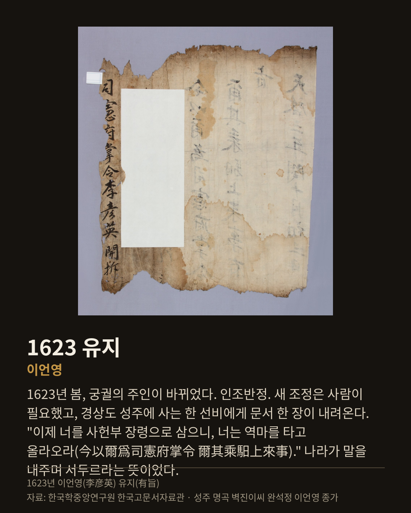
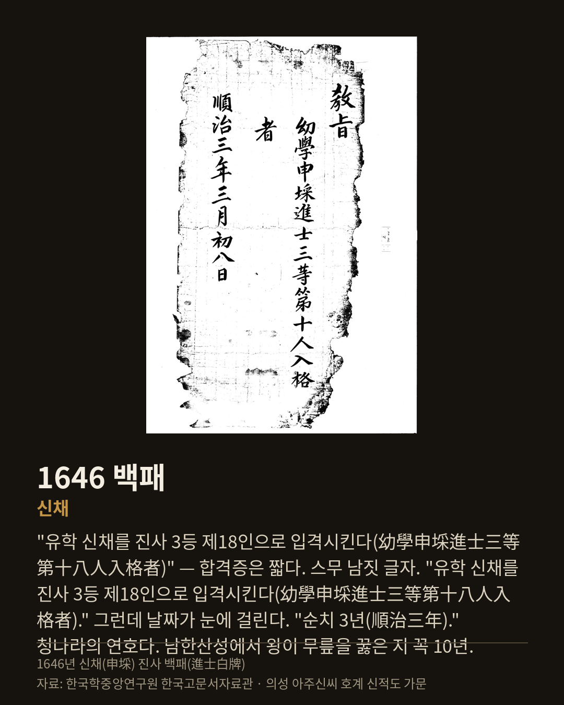
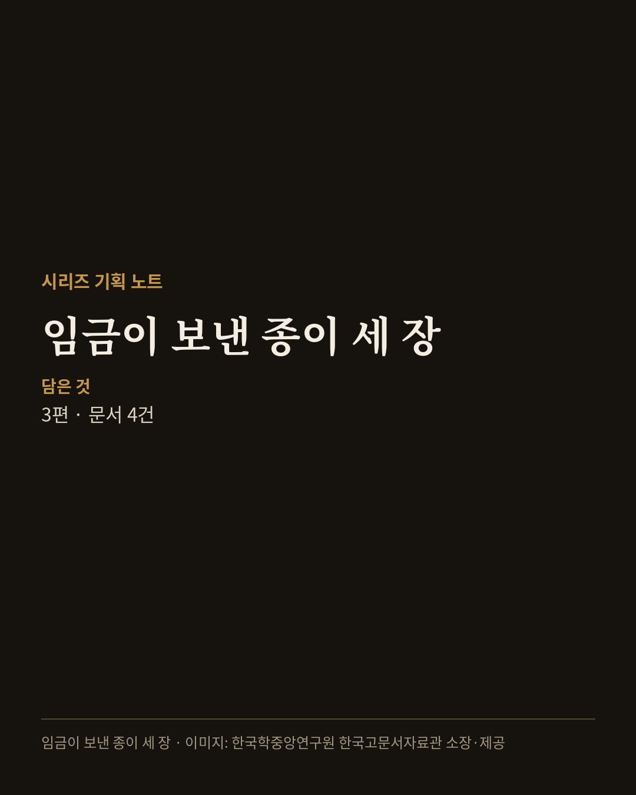
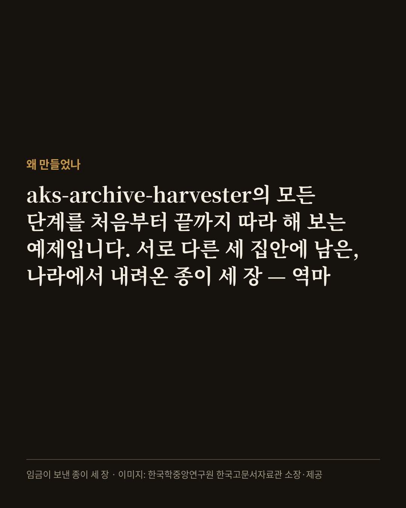
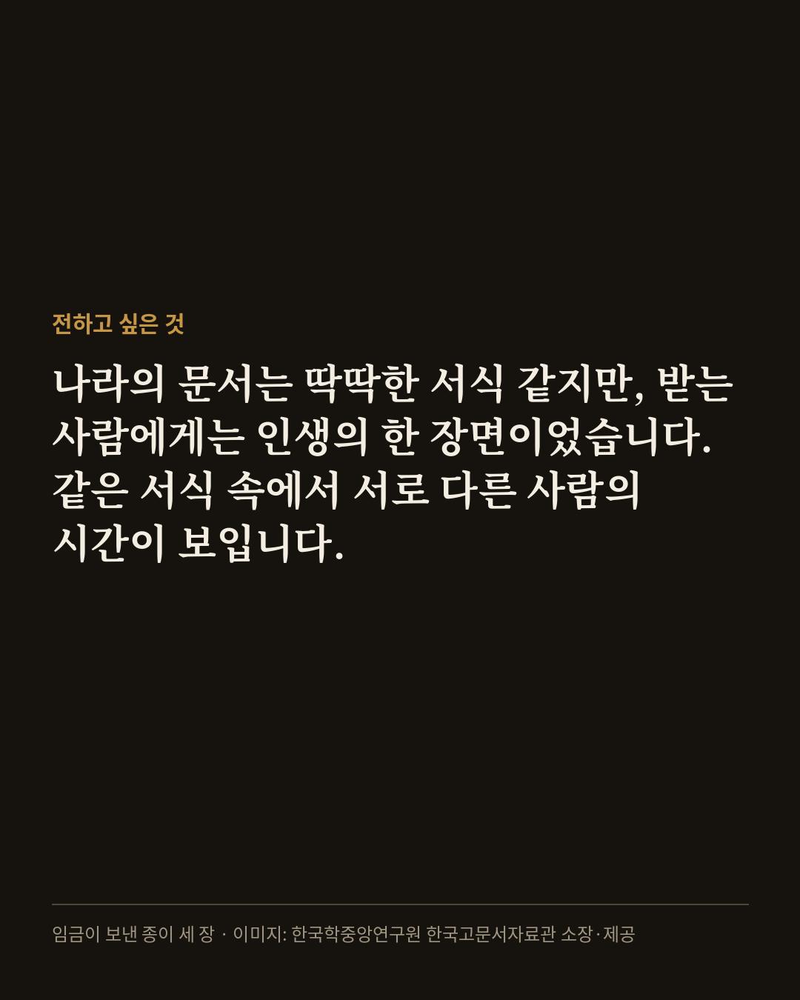
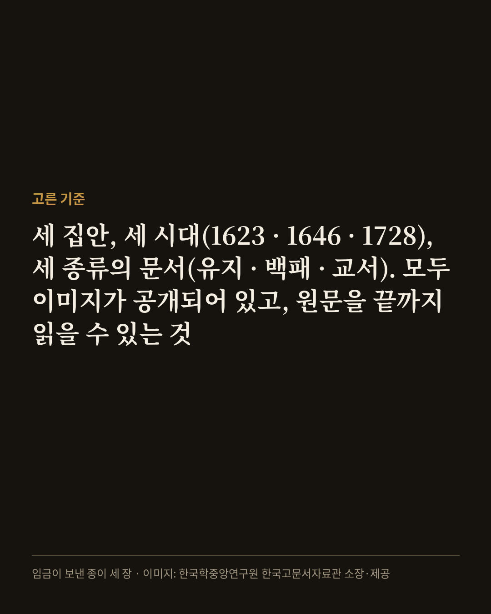
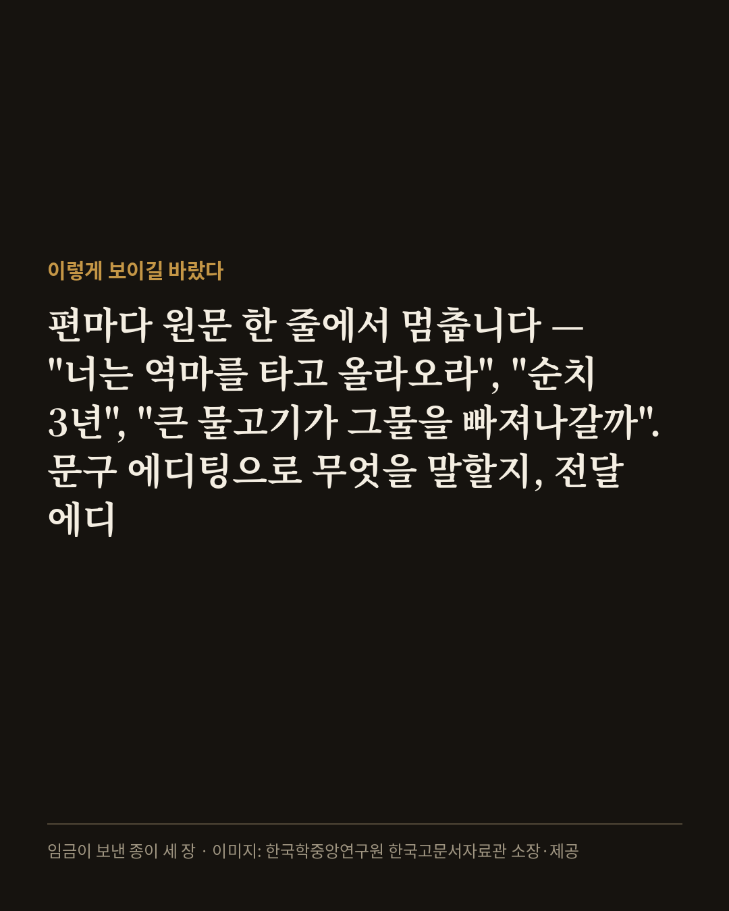
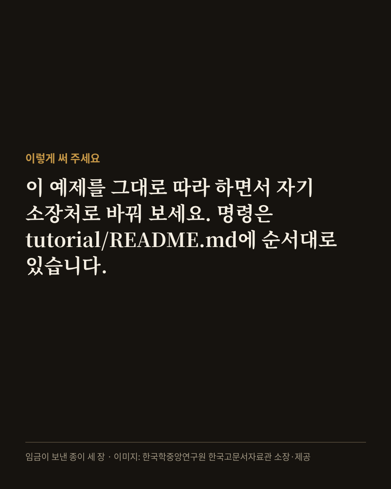
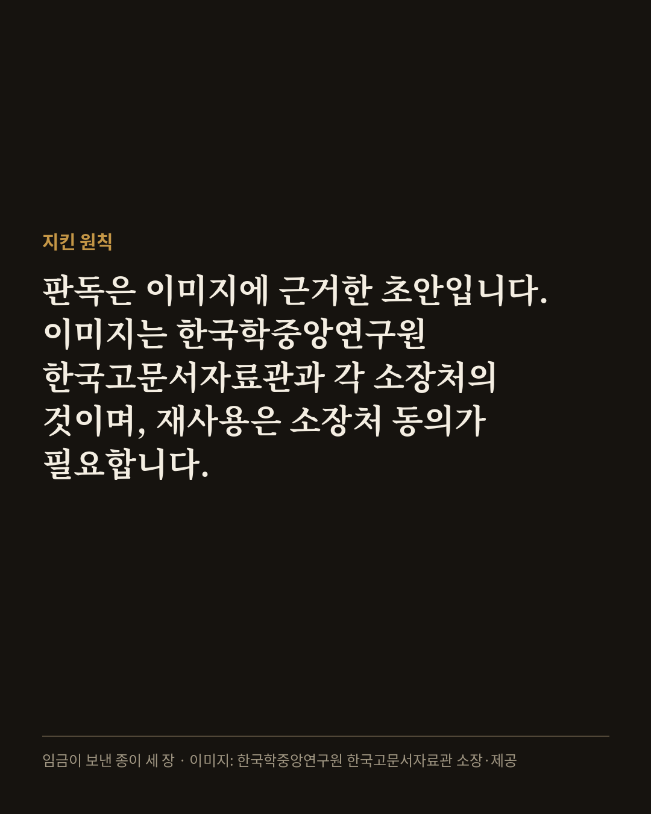

SERIES
임금이 보낸 종이 세 장
aks-archive-harvester의 모든 단계를 처음부터 끝까지 따라 해 보는 예제입니다. 서로 다른 세 집안에 남은, 나라에서 내려온 종이 세 장 — 역마를 타고 올라오라는 유지, 청나라 연호가 적힌 합격증, 반란을 진압한 무관의 공신교서 — 를 한 시리즈로 묶었습니다.
3편
4문서
3영상 있는 편
7시리즈 카드
결과물 바로 가기
편마다: 첫 페이지(모든 결과물) · 전시 웹페이지 · 활동지(선생님께) · 채널별 홍보안 · 큐레이터 노트 · 전달 에디팅 · 홍보 글 · 릴스·가로 영상 · 원문·번역 CSV
이 사이트에 있는 것
에피소드 3편
편마다 첫 페이지 · 전시 · 활동지 · 카드 · 영상 · 노트 · CSV
통합 분석
시대 · 문서 유형 · 지역 · 정서 · 판독 · 원문 인용 · 질문을 한 장에
기획 노트
왜 만들었나 · 고른 기준 · 히스토리 · 편별 메시지
홍보 가이드
채널별 형식과 문구 · 4주 계획
활용 가이드
누가 무엇을 할 수 있나 · 지킬 것
시리즈 카드 7장
SNS에 바로 쓰는 기획 노트 카드
한눈에 — 자동 요약
- 연대가 적힌 문서 4건 가운데 17세기가 3건(75%)으로 가장 많습니다. 가장 이른 문서는 1623년, 가장 늦은 문서는 1728년 — 105년에 걸칩니다.
- 문서 유형은 유지 2건 · 백패 1건 · 공신교서 1건 순으로 많고, 모두 3가지입니다.
- 원문 판독 4건(한자 331자) · 번역 4건(약 957자). 못 읽은 글자 □ 0개, 불확실 (?) 0개를 그대로 표시했습니다.
- 이야기에 종이에 적힌 문장을 "현대어(原文)"로 인용한 곳이 5곳 — 편마다 평균 1.7곳입니다.
에피소드

EP.01"역마를 타고 올라오라" — 인조반정 직후 성주 선비를 부른 두 장의 유지성주 명곡 벽진이씨 완석정 이언영 종가
정권이 바뀌는 순간, 지방의 선비에게도 역사가 문을 두드렸다는 것.

EP.02병자호란 10년 뒤의 합격증 — 진사 3등 제18인 신채의성 아주신씨 호계 신적도 가문
치욕의 시대에도 사람들은 자기 삶의 성취를 소중히 간직했다는 것.

시리즈 카드






